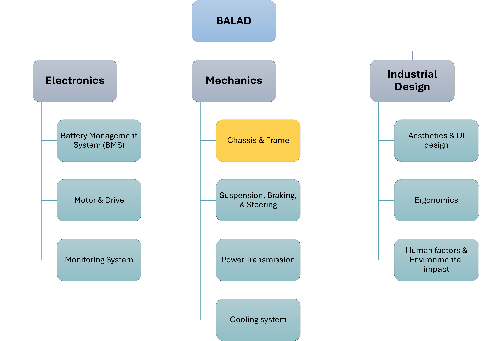

BALADA: An Electric Motorcycle Prototype
Introducing BALADA, our groundbreaking electric motorcycle prototype, inspired by the Persian word for a thoroughbred horse—a true symbol of speed and elegance. This project was the brainchild of a dynamic team of student engineers to compete in a nationwide machine design competition, where it proudly secured second place. My role in this project focused on the design and optimization of the chassis. My responsibilities included 3D modeling and stress analysis to ensure the structure was both efficient and robust.
I developed he 3D model of BALADA’s chassis in SolidWorks, selecting materials considering weight, strength, cost, and availability. I then used ADAMS to simulate the chassis under various conditions—including static, acceleration, and braking—with two passengers, each weighing an average of 70 kg, to predict the loads it would face. Following this, I conducted stress analysis in SolidWorks Simulation, which revealed a minimum safety factor of 1.7.